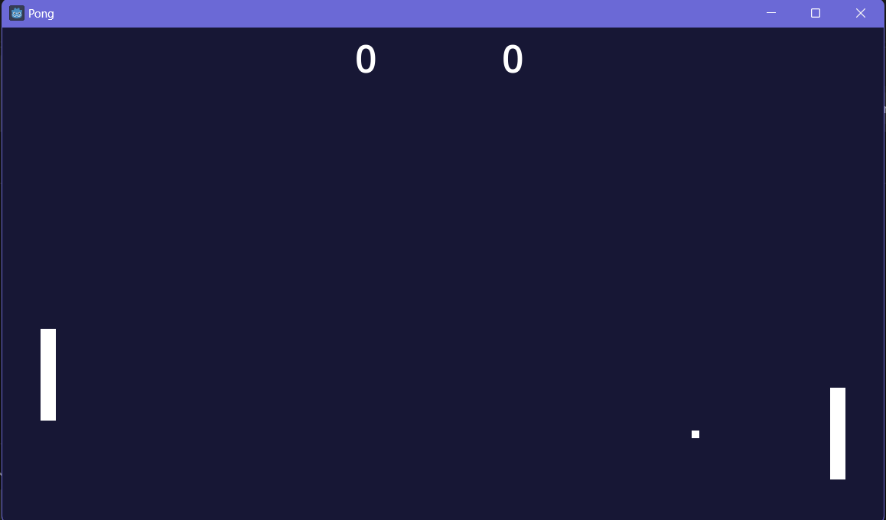

Pong

Clone do clássico jogo Pong feito em Godot, com GDScript. É possível jogar sozinho, contra um adversário programado,
ou multiplayer local, com os jogadores compartilhando o teclado.
Tecnologias Utilizadas
Godot
GDScript